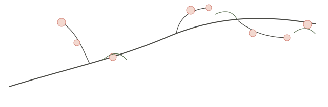
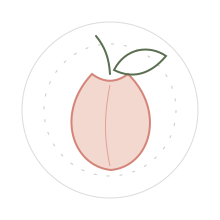

OBLIVIO DUORUM
Архив, память, стёртые связи и первая дверь в корпус цикла.
ОткрытьOPENBOOK · BRANCHING EDITION
Научно-футуристический цикл о человеке, памяти и выборе в мире, где почти всё можно заменить.

цикл
«Зелёная дверь» — это дуга книг о личности, связи и выборе. Технологии не отменяют человеческое; они только резче показывают, что именно нельзя заменить без потери смысла.

open edition
Openbook — не витрина с одной финальной сборкой. Это контейнер, где рядом живут исходники, Markdown-версии, обложки, ветки, форки и будущие траектории чтения.

libri
Архив, память, стёртые связи и первая дверь в корпус цикла.
ОткрытьДерево изгнания, предел милосердия и дверь как ответственность.
ОткрытьКнига-порог: точка, где частная память, ветка архива и выбор сходятся в один знак.
Репозиторийline art

repo
Сайт ведёт к трём точкам: общий репозиторий цикла, отдельное издание первой книги и папка второй книги.